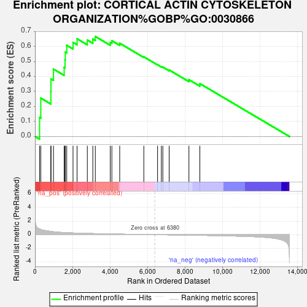
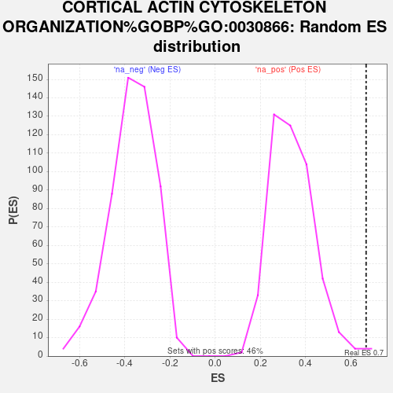

| Dataset | ControlvsDiabete |
| Phenotype | NoPhenotypeAvailable |
| Upregulated in class | na_pos |
| GeneSet | CORTICAL ACTIN CYTOSKELETON ORGANIZATION%GOBP%GO:0030866 |
| Enrichment Score (ES) | 0.6670104 |
| Normalized Enrichment Score (NES) | 1.9586719 |
| Nominal p-value | 0.008733625 |
| FDR q-value | 0.087253295 |
| FWER p-Value | 0.742 |

| SYMBOL | RANK IN GENE LIST | RANK METRIC SCORE | RUNNING ES | CORE ENRICHMENT | |
|---|---|---|---|---|---|
| 1 | ANLN | 244 | 0.833 | 0.1273 | Yes |
| 2 | IQGAP3 | 309 | 0.765 | 0.2559 | Yes |
| 3 | FMNL2 | 845 | 0.482 | 0.3004 | Yes |
| 4 | IQGAP2 | 851 | 0.479 | 0.3836 | Yes |
| 5 | ROCK1 | 984 | 0.432 | 0.4492 | Yes |
| 6 | LLGL1 | 1553 | 0.310 | 0.4613 | Yes |
| 7 | ROCK2 | 1599 | 0.305 | 0.5110 | Yes |
| 8 | IQGAP1 | 1614 | 0.303 | 0.5628 | Yes |
| 9 | FMNL1 | 1691 | 0.292 | 0.6081 | Yes |
| 10 | RHOQ | 2026 | 0.252 | 0.6273 | Yes |
| 11 | LLGL2 | 2241 | 0.230 | 0.6517 | Yes |
| 12 | NCKAP1L | 2788 | 0.183 | 0.6432 | Yes |
| 13 | ARF6 | 3080 | 0.163 | 0.6500 | Yes |
| 14 | RTKN | 3213 | 0.153 | 0.6670 | Yes |
| 15 | RACGAP1 | 4008 | 0.107 | 0.6269 | No |
| 16 | NCKAP1 | 4094 | 0.102 | 0.6384 | No |
| 17 | DLG1 | 4513 | 0.081 | 0.6217 | No |
| 18 | PDCD6IP | 5797 | 0.025 | 0.5311 | No |
| 19 | FMNL3 | 6530 | -0.006 | 0.4780 | No |
| 20 | PLEK | 6731 | -0.013 | 0.4655 | No |
| 21 | RAB13 | 6810 | -0.017 | 0.4627 | No |
| 22 | STRIP1 | 7148 | -0.032 | 0.4433 | No |
| 23 | LCP1 | 8201 | -0.074 | 0.3784 | No |
| 24 | VPS4A | 8783 | -0.098 | 0.3525 | No |
